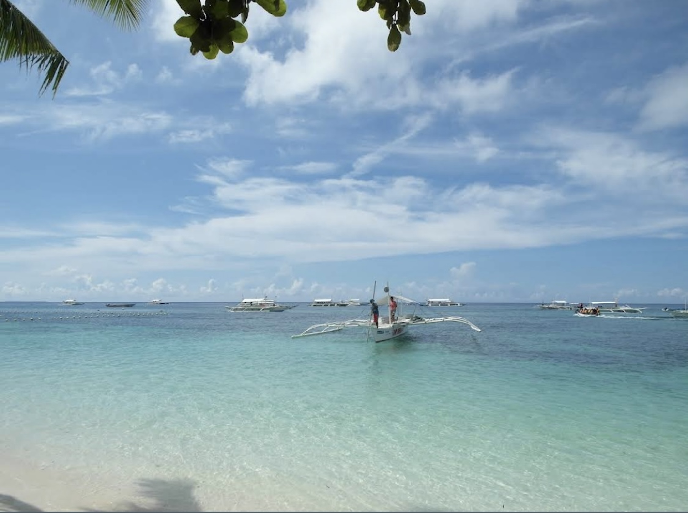
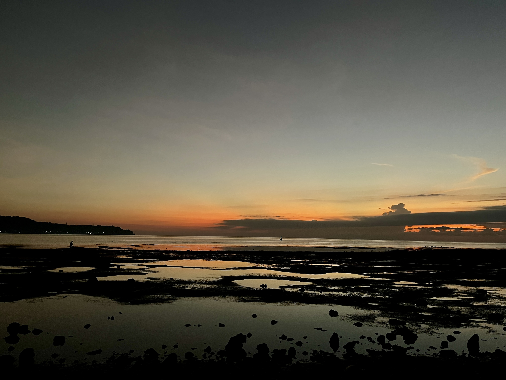

It has been exactly a decade since I first visited the Philippines. Back then, I was a traveller in the purest sense — chasing adventure, sunshine, and fleeting experiences that define a thirty-day island hop. To be honest, my memories of that time are a bit murky, but arriving in Bohol for the second time triggered a profound sense of déjà vu. The casual, carefree frequency of island life returned instantly, and it felt wonderful to be back.

Settling into Jagna — certainly the smallest town I've ever called home — has required a bit of a mindset change. Moving from the high-paced stress of academic research to island life and Filipino time isn't just a change of scenery; it's a system reset. Navigating the unique structure of CVIF has been interesting, and I've been lucky to participate in fieldwork with the students and other teachers (shoutout to Prince, Ron, Adriane, Richidel, Anya, and Abby), which involved wading through the intertidal zones to sample molluscs as the sun rises over the horizon.

The most striking aspect of this fellowship isn't the fieldwork, though — it's the students. I am working with a brilliant group, currently drafting their own manuscripts, and witnessing their process has been a study in pure grit. At home, I took for granted a seamless workflow: the laptop, the dual monitors, internet access. Here, I watch my students navigate complex spreadsheets and draft entire scientific papers on their smartphones. It is a humbling, almost uncomfortable check of my own academic privilege. Their work is a testament to their patience and determination — qualities I'm not sure I could summon under the same constraints. They are fuelled by a resourcefulness that makes my past frustrations with technology feel a bit ridiculous.
Beyond teaching and fieldwork, I've been chasing new adventures. This meant a detour to Taiwan for five days. Being vegetarian in the Philippines has been a challenge, so a temporary escape to Taipei's famous night markets served as a delicious intermission while visiting numerous cultural sites.
I also decided to explore Bohol on two wheels — riding a scooter solo for the first time. We went at 3am to catch sunrise on the peak of Alicia Panoramic Park (a stunning spot that feels like a local secret) and afterwards treated ourselves to lunch on the beautiful beaches in Anda. Miraculously, I didn't crash, though I wouldn't recommend my "learn as you go" method to everyone.
Two months in, this fellowship has already exceeded what I imagined it would be. The students are extraordinary. The community is generous. And Jagna, this small, sun-drenched town at the edge of the Bohol Sea, is slowly starting to feel like home.
— An Tran, Science Corps Fellow at CVIF, Jagna, Philippines (Jan–June 2026)